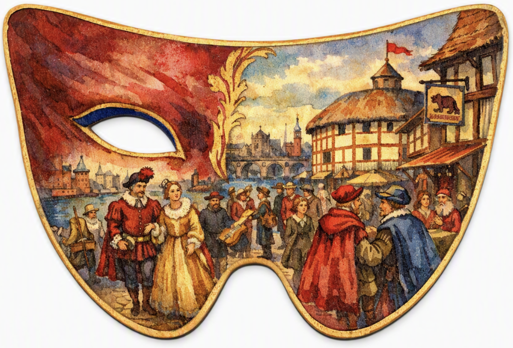

In this activity, I created a coaster design for William Shakespeare through Microsoft’s Copilot. Firstly, I identified interview questions to assist with the coaster design. Some questions were: What would be your comfort drink? What design styles are the decorations in your home? (minimalistic, vintage…)
Secondly, I used the questions to interview Shakespeare, learning valuable information that would be important in informing my coaster design criteria. Finally, based on research and the interview, I designed Shakespeare’s drink coaster. The picture above is the image that Copilot generated!